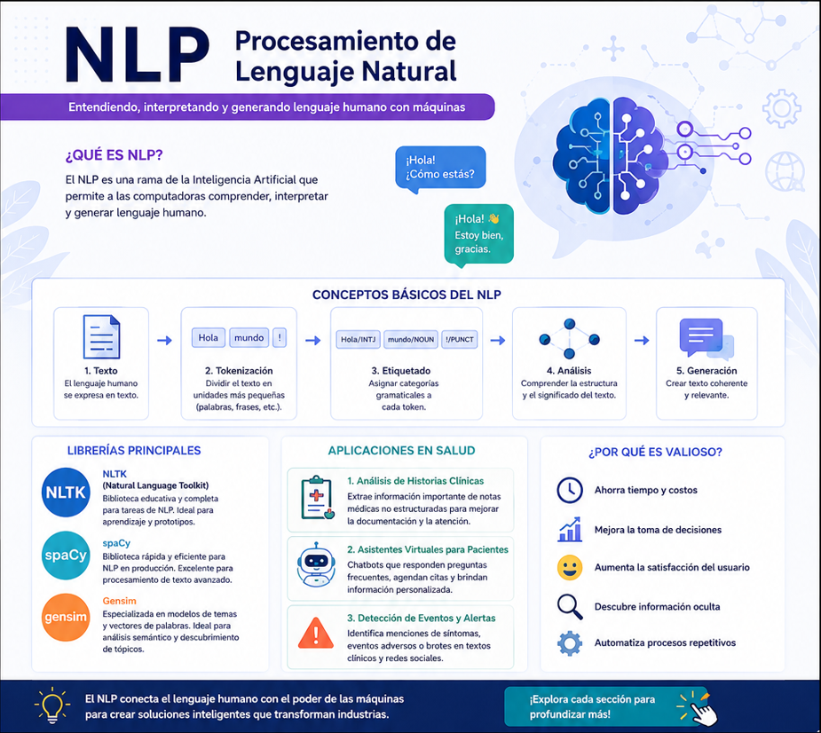
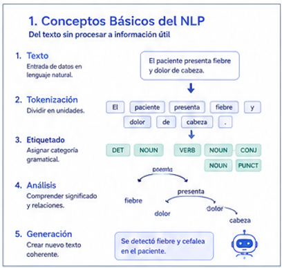
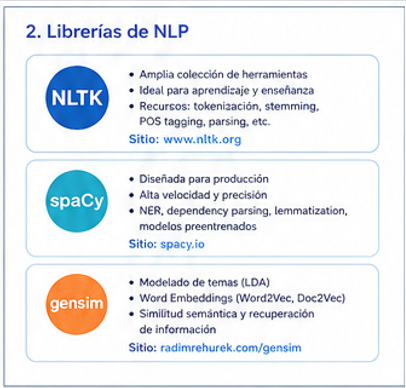
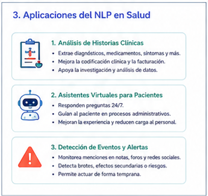
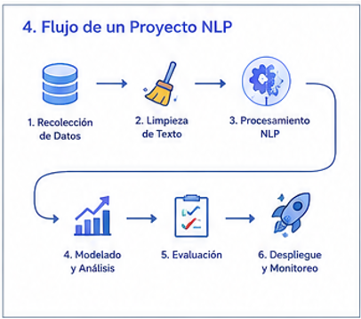
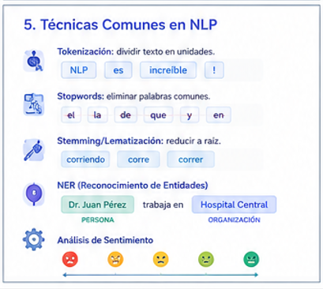
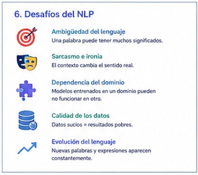

Comprensión (NLU)
La máquina extrae el significado de una frase: intención, entidades y sentimiento.


El Procesamiento de Lenguaje Natural (NLP) es la rama de la Inteligencia Artificial que permite a las computadoras comprender, interpretar y producir lenguaje humano, ya sea escrito o hablado.
La máquina extrae el significado de una frase: intención, entidades y sentimiento.
La máquina produce texto coherente: respuestas, resúmenes o traducciones.
Modelos modernos trabajan con decenas de idiomas a la vez.
Procesa millones de documentos en segundos, algo imposible de forma manual.
El NLP convierte una frase en tokensDividir el texto en unidades mínimas: palabras, signos o subpalabras., reduce cada palabra a su raíz mediante lematizaciónReducir una palabra a su forma base o de diccionario. Ej.: «corriendo» → «correr»., identifica cada palabra con su categoría gramaticalPart-of-Speech: etiquetar si una palabra es sustantivo, verbo, adjetivo, etc., detecta nombres propios con NERNamed Entity Recognition: localizar personas, lugares, fechas u organizaciones en el texto. y finalmente representa el significado como embeddingsRepresentación numérica de una palabra o frase en un espacio vectorial. Palabras similares quedan cerca..

Tres bibliotecas de Python que dominan el mundo del NLP. Haz clic en cada tarjeta para ver un ejemplo de código.
La librería académica por excelencia. Ideal para aprender: incluye corpus, tokenizadores y algoritmos clásicos.
import nltk
nltk.download('punkt')
from nltk.tokenize import word_tokenize
texto = "El paciente tiene fiebre"
print(word_tokenize(texto))
# ['El', 'paciente', 'tiene', 'fiebre']Diseñada para producción. Rápida y precisa, ofrece modelos preentrenados para NER y análisis sintáctico.
import spacy
nlp = spacy.load("es_core_news_sm")
doc = nlp("El Dr. López atiende en Madrid")
for ent in doc.ents:
print(ent.text, ent.label_)
# López PER · Madrid LOCEspecializada en semántica: modelado de tópicos (LDA) y embeddings (Word2Vec) para descubrir temas y similitudes.
from gensim.models import Word2Vec
frases = [["fiebre", "tos", "gripe"],
["dolor", "cabeza", "migraña"]]
modelo = Word2Vec(frases, min_count=1)
print(modelo.wv.most_similar("fiebre"))| Criterio | NLTK | spaCy | Gensim |
|---|---|---|---|
| Enfoque principal | Educación | Producción | Semántica / Tópicos |
| Velocidad | Media | Alta | Alta |
| Curva de aprendizaje | Suave | Media | Media |
| Fuerte en | Corpus y algoritmos clásicos | NER y sintaxis | Word2Vec y LDA |

El sector salud genera enormes cantidades de texto. El NLP lo transforma en decisiones más rápidas y seguras. Aquí tres aplicaciones reales.
Extrae automáticamente diagnósticos, síntomas y medicamentos de notas médicas no estructuradas mediante NER.
Ahorra horas de trabajo administrativo, reduce errores de codificación y facilita la búsqueda de pacientes con criterios clínicos concretos.
Modelos de topic modeling (Gensim) resumen y clasifican miles de artículos científicos.
Permite a los profesionales estar al día con la evidencia reciente y descubrir relaciones entre fármacos y enfermedades.
Asistentes conversacionales entienden los síntomas descritos por el paciente (NLU) y orientan sobre la urgencia.
Mejora el acceso a la atención 24/7, descongestiona urgencias y prioriza los casos según su gravedad.
Escribe cómo te sientes tras una consulta médica y el NLP estimará el tono. (Demostración simplificada basada en palabras clave.)
Las etapas típicas de un proyecto de NLP, desde los datos crudos hasta el modelo en producción.

Las técnicas y tareas más habituales para procesar y entender el lenguaje.

Ambigüedad, contexto, sesgos y otros retos que enfrenta el Procesamiento de Lenguaje Natural.

Enlaces oficiales y materiales para seguir profundizando en NLP.
Guía oficial y el libro «Natural Language Processing with Python».
nltk.org ↗Tutoriales, cursos gratuitos y modelos preentrenados.
spacy.io ↗Documentación de Word2Vec, Doc2Vec y modelado de tópicos.
radimrehurek.com ↗Curso gratuito y moderno sobre Transformers y NLP.
huggingface.co ↗Libro de referencia de Jurafsky & Martin (Stanford), gratuito.
stanford.edu ↗Cursos prácticos y datasets para experimentar.
kaggle.com ↗Un mini-quiz de 3 preguntas para repasar lo aprendido.